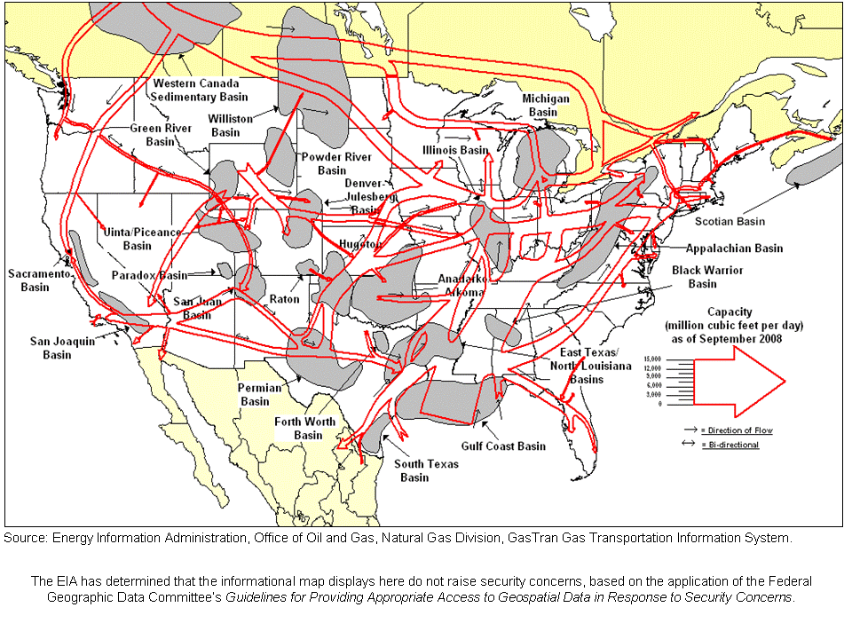

| Transportation Corridors |
About U.S. Natural Gas Pipelines - Transporting Natural
Gas
based on data through 2007/2008 with selected updates |
|---|
|
U.S. Natural Gas Supply Basins Relative to Major Natural Gas Pipeline Transportation Corridors, 2008 |
